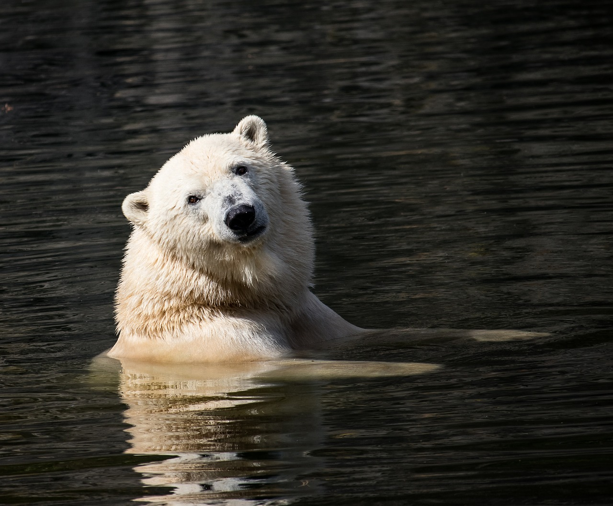

Polar Bear
Polar bears are native to the Artic, Arctic Ocean, sea ice, and other adjacent coastal areas. They are very strong swimmers, polar bears can sustain a pace of 6mph by paddling with their front paws. They have a layer of thick body fat (about 4 inches) and a water-repellent coat that shields them from the icy cold waters and air. \ They rely heavily on the sea ice for doing almost everything in their life. Traveling from place to place, hunting for food, sleeping and resting and mating. But due to outside forces the polar bears are losing their sea ice habitat, which puts them at a vunerable spot for extinction.
Polar bears have a diet of ringed and bearded seals, as they need large amounts of fat to survive the coldness of the Arctic. They spend 50% of their time hunting for food. They might catch only 1 of the 10 seals it hunts for depending on the time of year. Polar bears have 42 razor sharp teeth that helps chew the fat and muscles of the seals they hunt. Their white fur helps them blend in with the snowy landscape. They have 3 eyelids, the 3rd eyelid helps protect them from the harsh elements. Underneath their white fur, they have black skin that help them keep warm, as black absorbs heat from the suns rays.
.jpg)